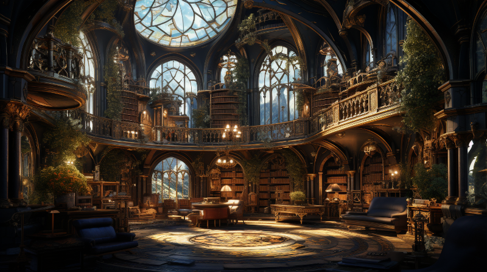

Introduction: Books

Figure 1: Main lobby inside the Great Library of Ornasion
In the world of Naurrnen, the written word holds a sanctified place, and its archives are a treasure trove of histories, myths, and scholarly discoveries. Among these, two works hold a central place in defining the world’s intellectual heritage. Bayetti Falasha’s poetic collections are not just verses; they are the dreams and philosophies of an ancient Elven civilization, captured in eloquent language. Her writings hold subtle clues about the mysterious Athalorion ruins, beckoning scholars and adventurers alike to delve into their secrets.
On the other end of the spectrum, we have Faelinoril Galathil’s “In Áyliaremma’s Footsteps,” a magnum opus that breaks scholarly ground by unlocking elements of the elusive Amearan language. Through painstaking cross-referencing of Falasha’s poems and other Amearan texts, Faelinoril’s work transcends disciplines, merging linguistics, history, and archaeology into a cohesive narrative about Naurrnen’s complex past.
Other notable texts cover subjects as diverse as the arcane arts, the biographies of illustrious figures, and the extensive chronicles of the Laurië Citime, the center of magical learning. The lorekeepers of the Archiver’s Guild are often in the pursuit of elusive scrolls or tomes, documenting Naurrnen’s many secrets. Each book, scroll, or parchment adds another layer to the intricate mosaic of Naurrnen’s history and culture, inviting readers, scholars, and adventurers to explore its depths.
In Naurrnen, the books are more than mere paper and ink; they are the essence of a civilization, the roadmap to its soul, and the keys to its myriad mysteries. They beckon with the promise of discovery, awaiting the hand that will turn their pages next.